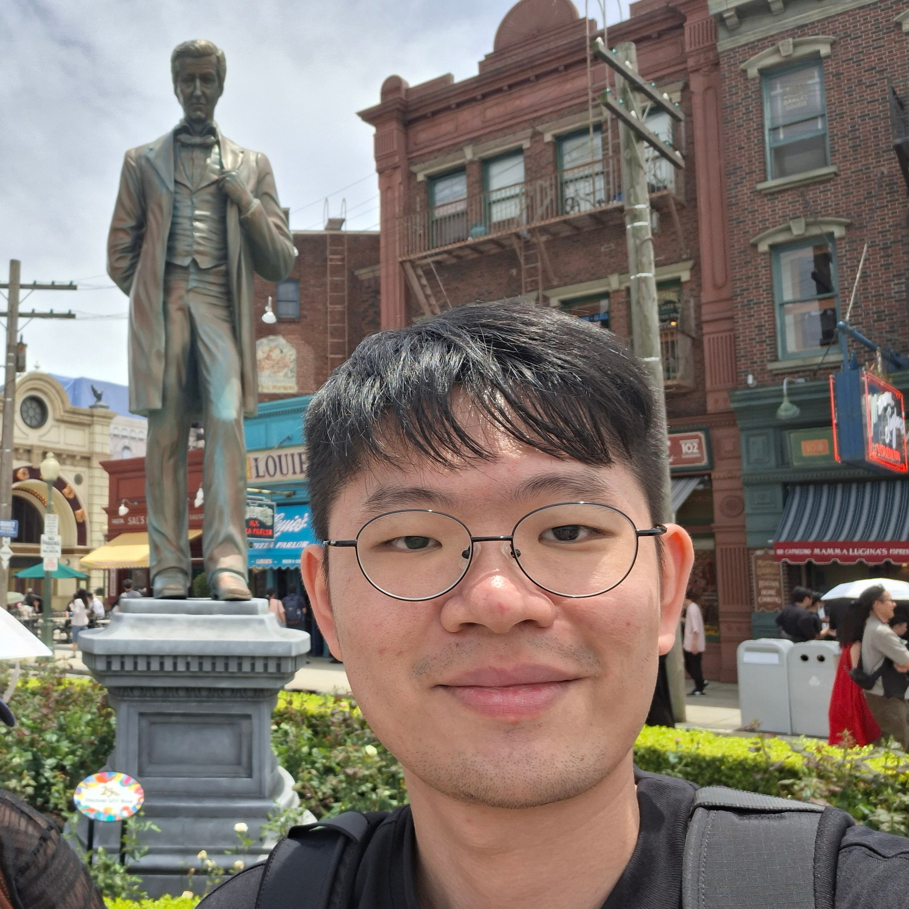
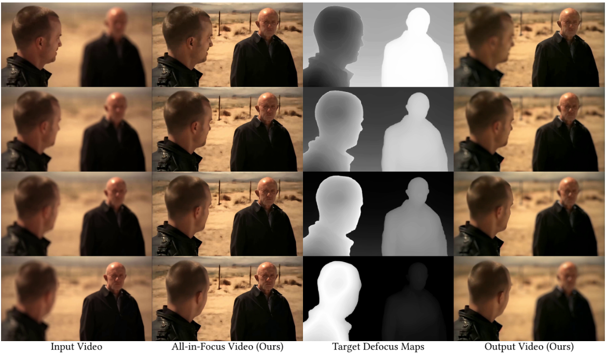
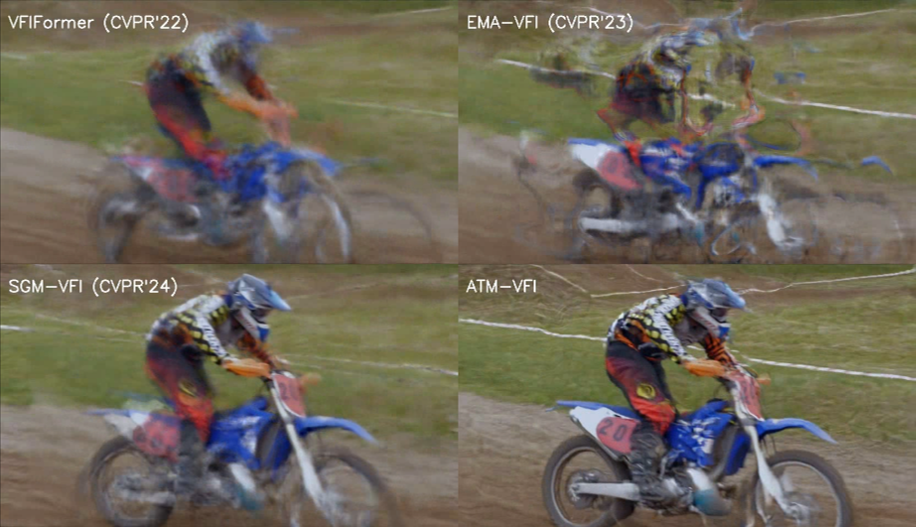
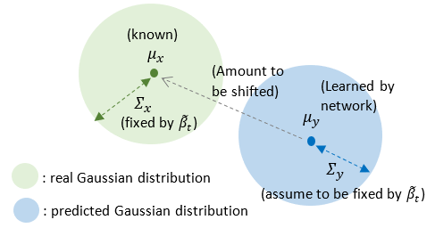

(Kenny) Chee Kim, Gan | 顏子鈞

I was born and raised in Malaysia until 18, before I lived in Taiwan for 8 years. Now I am staying in Los Angeles.
I am a first year Ph.D student in Electrical and Computer Engineering at the University of Southern California (USC), supervised by Prof. C.-C. Jay Kuo. Previously, I served as a RA at Academia Sinica, working with Dr. Jun-Cheng chen. I earned my B.S and M.S from National Taiwan Univeristy (NTU) in Electrical Engineering, and I was fortunate to worked with Prof. Jian-Jiun Ding on Image/Video Signal Processing.
Research Interests
My research interests span from low-level (image/video signal processing, computer vision) to high-level (computational imaging, generative AI) vision tasks.
My current research project works on image codec.
Hobbies
I enjoy coffee, running, badminton, basketball, and watching animes/movies, solving puzzles when I am free.
Experiences
I gained valuable industry experiences at Novatek, MediaTek, and MobileDrive.
- Novatek
(full-time): Served as System-on-Chip Algorithm Engineer. I designed both hardware and software algorithm for camera SoC, mostly focusing on HDR imaging algorithms. - MediaTek
(internship): I interned at the video codec standard team, had some hands-on experience on H.265 and H.266. - Mobiledrive
(internship): I interned at the Advance Driver Assistance System (ADAS) team. Mostly doing software integration for Bird-Eye-View 3D object detection & tracking.
Contact
- Email: gankenny26@gmail.com or cheekimg@usc.edu
- LinkedIn: LinkedIn
News
- (2026 Aug) One paper is accepted to Siggraph Asia 2026.
- (2026 Mar) I have been accepted to USC ECE Ph.D.
Publication

Chee Kim Gan, Pin-Yen Chiu, I-Sheng Fang, Jun-Cheng Chen
SIGGRAPH Asia 2026

Chee Kim Gan, Jian-Jiun Ding, Chang-Yu Hsieh, De-Yan Lu
ICASSP 2025
Adaptive face detection algorithm in blurring scenarios
Yi-Wei Tsai, Chee Kim Gan, Jian-Jiun Ding
IWAIT 2025
Article

A comprehensive review of theory, architectures, applications, and video generation of the Diffusion Models (up to June 2023)
Last updated: 2026/10/30